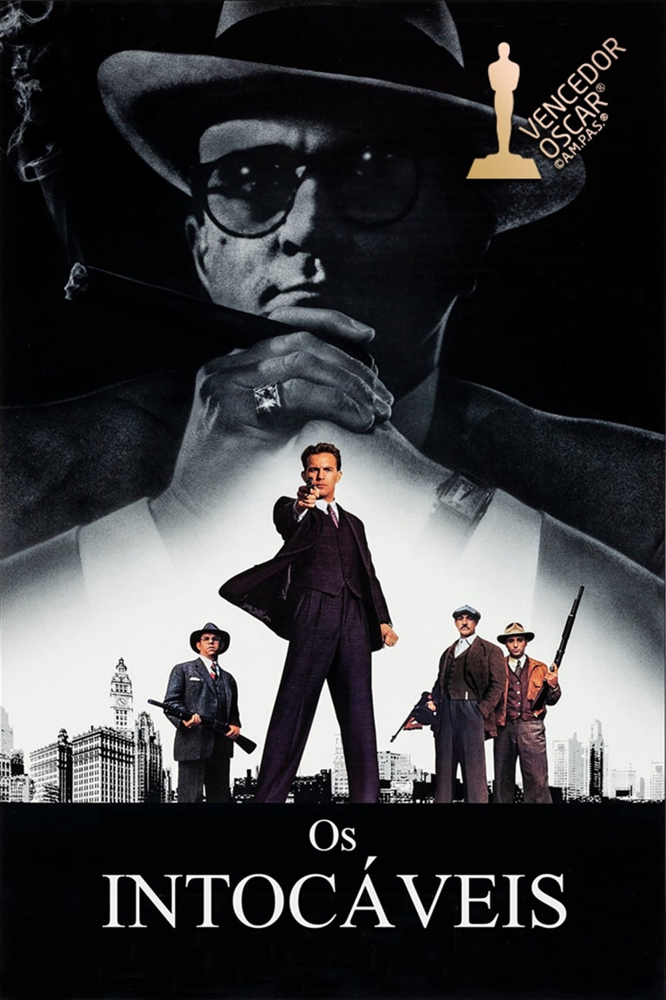
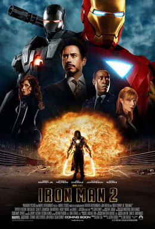
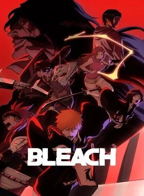
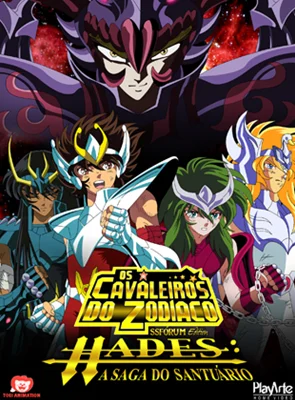
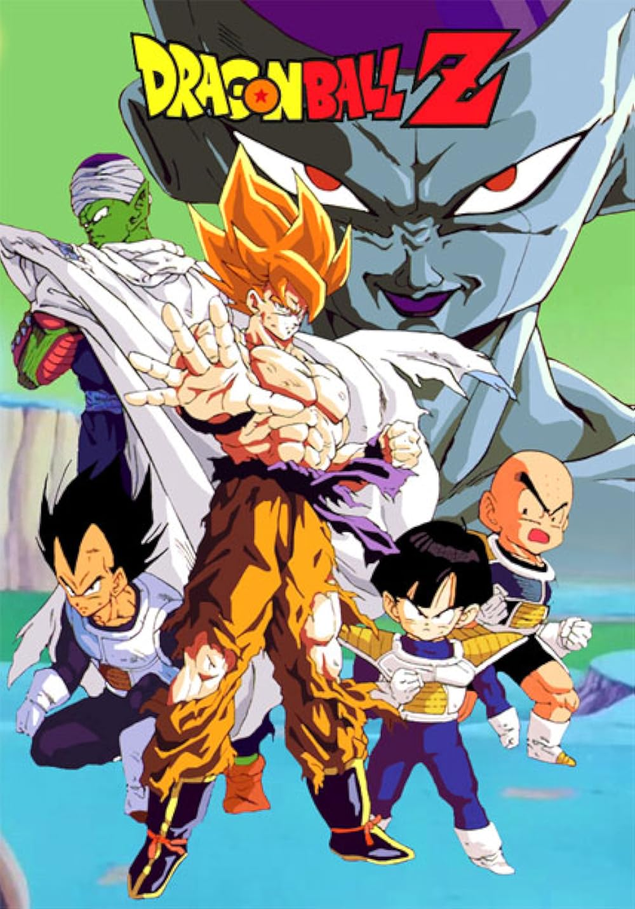
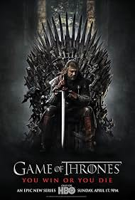
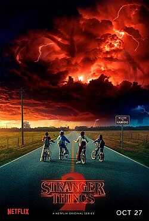

Super Cinema
Filmes
O Senhor dos Anéis: O Retorno do Rei

Filme de ação e aventura, ganhador de 11 oscars encerrando a adaptação da série O Senhor dos Anéis, escrita por J.R.R. Tolkien
Os Intocáveis

Filme de investigação e máfia, baseado no livro do mesmo nome, narra a história de Eliot Ness e sua jornada para prender o mafioso Al Capone
Homem de Ferro 2

Filme de ação e aventura, sequência do filme Homem de Ferro, narra a história de Tony Stark enfrentando novos desafios e inimigos
Animes
Bleach

Anime de ação e aventura, narra a história de Ichigo Kurosaki, um adolescente que se torna um Ceifador de Almas e luta contra espíritos malignos
Os Cavaleiros do Zodíaco

Anime de ação e aventura, narra a história de Seiya e seus amigos, os Cavaleiros do Zodíaco, que lutam para proteger a deusa Atena e a humanidade
Dragon Ball Z

Anime de ação e aventura, narra a história de Goku e seus amigos, que lutam contra inimigos poderosos para proteger a Terra e o universo
Series
Breaking Bad

Serie de drama e crime, narra a história de Walter White, um professor de química que se torna um fabricante de metanfetamina para sustentar sua família após ser diagnosticado com câncer
Game of Thrones

Serie de fantasia e drama, narra a história de várias famílias nobres lutando pelo controle do Trono de Ferro em um mundo fictício cheio de intrigas, batalhas e magia
Stranger Things

Serie de ficção científica e suspense, narra a história de um grupo de crianças que enfrentam eventos sobrenaturais e experimentos secretos em sua cidade, enquanto procuram por seu amigo desaparecido